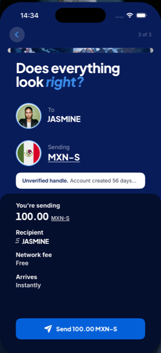

Spondula, a global payments network. Founder and engineer, 2025 to now.
One implementation of the maths, not two.
Spondula is a global payments network where your S-Handle is your payment identity, the payment equivalent of a username. You share it instead of account numbers, sort codes, IBANs or wallet addresses. Transfers between S-Handles on the network are free. It has been live in beta since June 2026 and is on the App Store and Google Play.
Nine repos, most of them mine end to end: a TypeScript web wallet and gateway, an admin console, a merchant gateway, a status page, an article studio, a Kotlin and Compose Android app, a SwiftUI iOS app, and a Rust ledger underneath. Alongside them a motion kit in Remotion whose compositions are prop-driven templates, so a corridor teaser is rendered from data rather than re-edited.
The decision I would defend hardest is the signing core. A wallet that signs payments on two platforms should have one implementation of the maths. So the key derivation, signing and address code is one Rust crate exposed to Swift and Kotlin through UniFFI, with the golden vector pinned at three layers and the signature path cross-checked against the reference JavaScript implementation. That crate is public as sr25519-uniffi.
A wallet that signs payments on two platforms should have one implementation of the maths.
